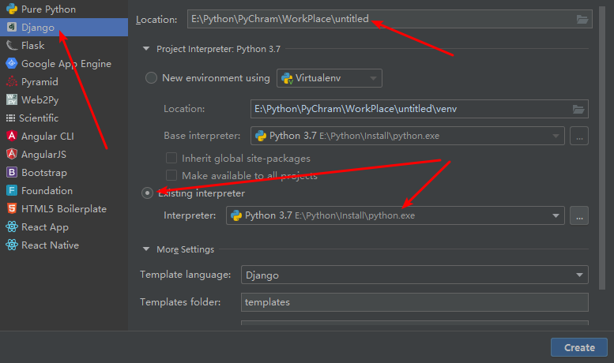
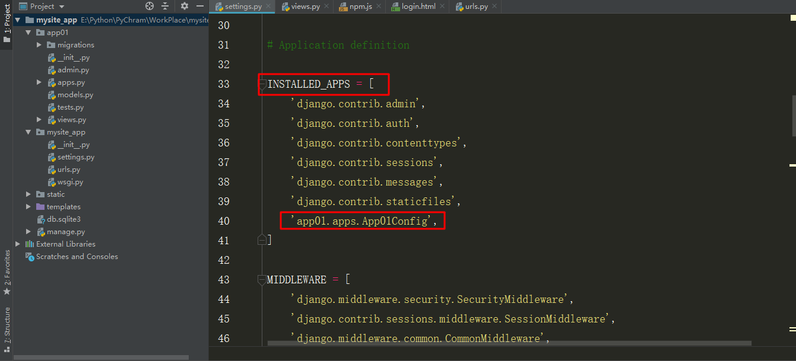
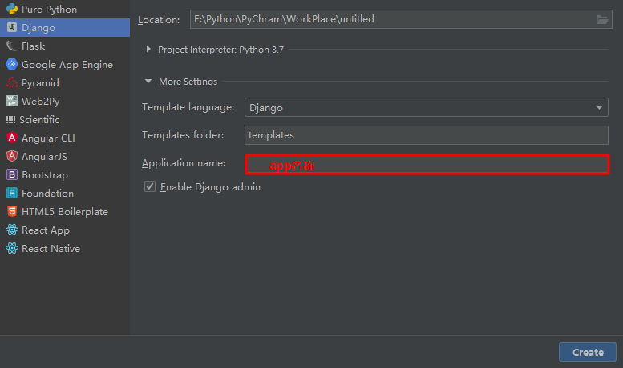
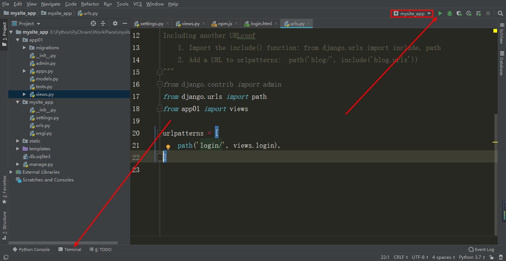

1.在pycharm中点击File,选择new project,点击djiango,在右面的Location中将untitile改为你的项目名，其余部分注意见下图：
2.在终端中输入命令：django-admin startproject 项目名
（1）在django项目目录下面打开终端，输入：python manage.py startapp app名称
此时应注意：
一定要在settings.py目录下添加这一句，表示你的项目中有这个app。
（2）在创建一个djiango项目时，在More Settings中填入app名称，即可。同时这种创建方法无需在settings.py中添加上一种方式的那个代码。

如图，有两种方式启动一个django项目：
（1）点击右上角的三角形，注意方框内必须是你的项目名称才可启动。
（2）打开终端，进入项目目录下，你可以在pycharm中右键点击你的项目名称，选择Open In Terminal，然后输入：python manage.py runserver,这里默认端口号为8000。或者输入：python manage.py runserver 端口号，指定端口号，一般8000以上都可以。或者输入：python manage.py runserver IP:端口号，指定IP和指定端口号。
1.templates:这个文件夹存放的是你的html文件。
2.在根目录下新建一个static文件夹，用于存放js,css和图片。
在settings.py的最后一行有这样一句：STATIC_URL = '/static/'，这里的static是保存目录的别名，我们还需要在这一句下面添加几行代码：
STATICFILES_DIRS = [
os.path.join(BASE_DIR, "static"),
]表示所有静态文件都放在这个文件夹中。
3.需要注释掉settings.py中带有csrf的那一行代码，大概就在46行。